Tomofast-x-q user manual
QGIS plugin for setting up, running and viewing Tomofast-x gravity and magnetic inversions. Plugin version 0.2.23.
This manual only covers the fields you must fill in to get from your data to an inversion result. Every other field has a sensible default and is left alone here. The reference manual describes every field on every tab, the files the plugin writes and the parameter-file names.
For a joint inversion, fill in everything marked Grav, Mag and Both.
1. Before you start
Install the plugin
In QGIS open Plugins > Manage and Install Plugins, search for tomofast_x_q and install it. To get the newest version instead, download the zip file of the main branch from github.com/TOMOFAST/tomofast-x-q and use Install from ZIP. The plugin works in QGIS 3.24 to QGIS 4.x. Click the TF-x toolbar button to open the plugin panel. It docks on the right of the QGIS window.
Install Tomofast-x
The plugin prepares the input files. The inversion itself is done by the separate Tomofast-x program, which you can run from the plugin if it is on the same computer.
- Windows: download tomofastx_win.zip, unzip it and keep
tomofastx.exesomewhere permanent. No MPI installation is needed. - macOS and Linux (and Windows through WSL): build Tomofast-x as described in the installation instructions.
Visualise (a 3D view of the result) also needs the pyvista Python package in the Python that QGIS uses.
Prepare your data
- Gravity or magnetic data: a GeoTIFF or ERS grid, or a CSV file of points with x, y and data columns. A layer you pick from the QGIS project must be saved to disk.
- Use anomalies, not total field. Tomofast-x fits the data as they are. Remove the main (IGRF) field and any regional trend from magnetic data, and use a Bouguer anomaly for gravity.
- Use a projected coordinate system in metres. Grids are used in their own CRS. CSV points can be reprojected by the plugin.
The example in this manual
The screenshots show a magnetic inversion from the Cajati example project (Cajati_Package_clip.qgz):
| Input | File |
|---|---|
| Magnetic grid | 7_GEOPHYSICS/Parana_Santa_Catarina_1095_MAGMIC_clipped.tif (125 m cells, SIRGAS 2000 / UTM 22S) |
| DTM | 10_TOPOGRAPHY/ALPSMLC30_S025W049_DSM_clipped_reproj.tif |
| Region of interest | 7_GEOPHYSICS/RegionOfInterest.shp |
| Mesh | 500 m cells in x, y and z, a 5,000 m deep core and a full depth of 10,000 m |
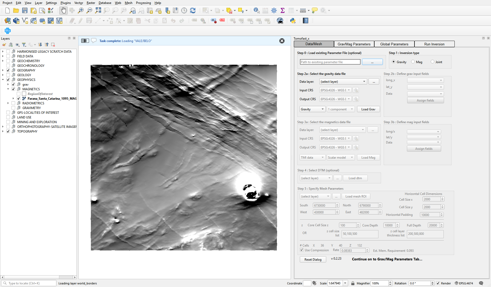
2. How the plugin is organised
The panel has four tabs. Work through them from left to right:
- Data/Mesh: choose the inversion type, load the data and define the 3D model mesh.
- Grav/Mag Parameters: give the sensor height and, for magnetics, the Earth's field.
- Global Parameters: choose an output folder. Save Files writes the data, mesh and parameter file.
- Run Inversion: run Tomofast-x, check the result, view it and export it.
Hold the mouse over any field to see a tooltip. The name in square brackets, for example [forward.magneticField.inclination], is the matching parameter-file entry.
3. Data/Mesh tab
Step 1: Inversion type Both
Choose Gravity, Mag or Joint. Only the boxes for that type are enabled: in the example, choosing Mag greys out the gravity boxes.
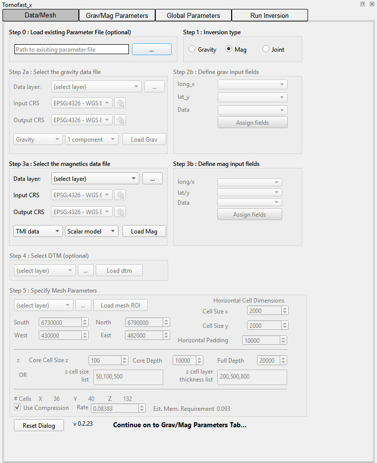
Step 3a: Select the magnetics data file Mag
(For gravity, use Step 2a in the same way.)
- Data layer: pick the grid or CSV layer from the drop-down list, which shows the layers in your project that are saved to disk. Alternatively, press ... to choose a file on disk.
- Load Mag: reads the data. For a grid, the layer extent is copied into the South/North/West/East mesh limits in Step 5. Press Load Mag again whenever you change the file.
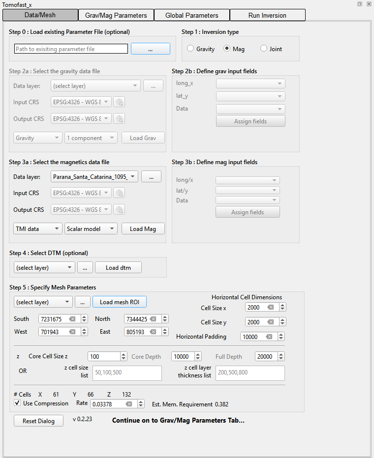
Steps 2b/3b: CSV point data only Grav Mag
Skip this for grids. For a CSV file:
- Input CRS and Output CRS (Step 2a/3a): the CRS of the coordinates in the file, and the projected CRS (in metres) to work in. Set both before pressing Load.
- long/x, lat/y, Data: choose the coordinate and data columns, then press Assign fields. The points are added to the map.
Step 4: Select DTM Optional
Without a DTM the ground is taken as flat at elevation 0. The example uses one: pick the DTM layer and press Load dtm. A reprojected copy called Reprojected DTM is added to the map.
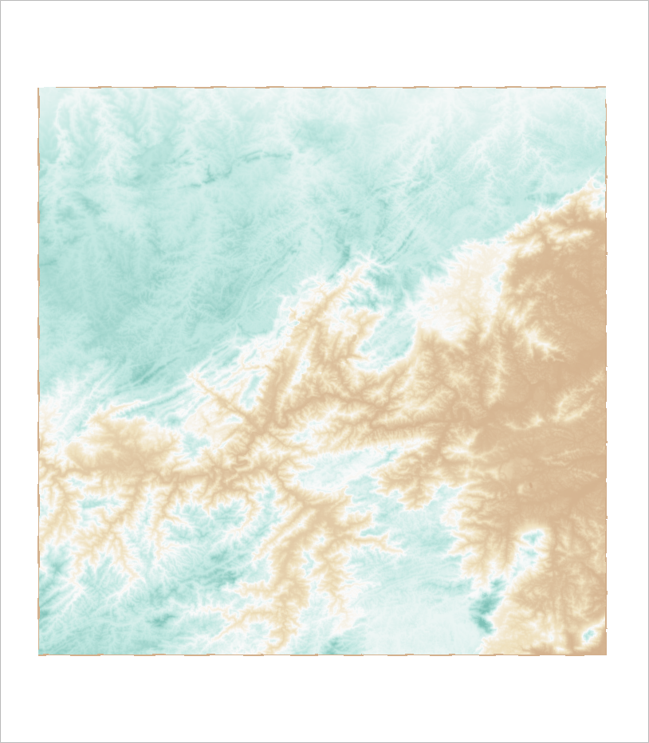
Step 5: Specify mesh parameters Both
Mesh limits. South, North, West and East define the core of the model: the area you want to image. They start as the extent of the data, which is often too large. You can type new limits, or Optional pick a polygon layer and press Load mesh ROI to use the rectangle around it (the example does this).
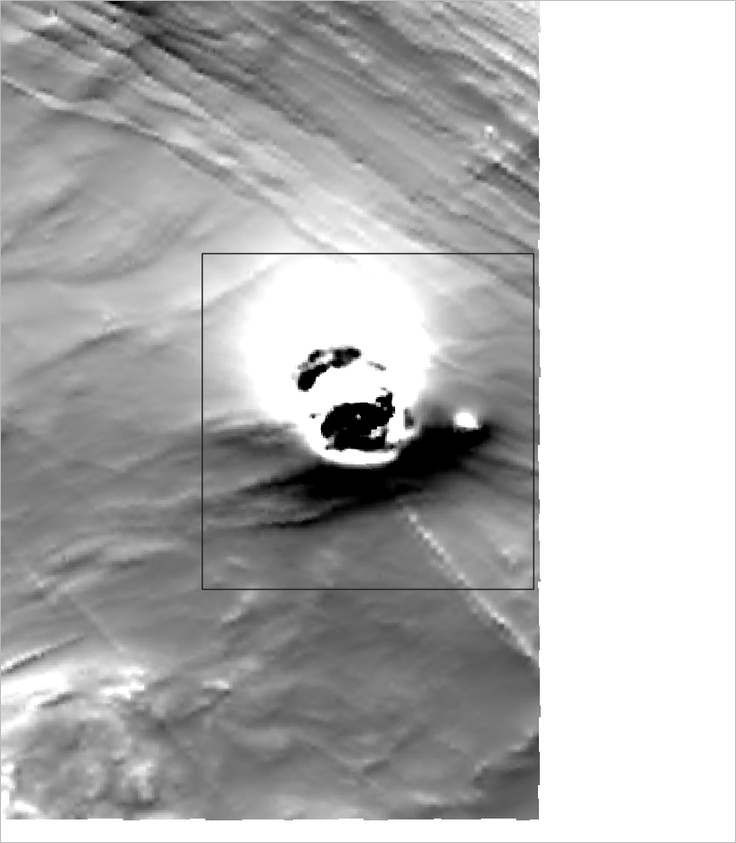
Cell sizes and padding.
- Cell Size x, Cell Size y: horizontal cell size in metres. Example: 500.
- Horizontal Padding: extra distance added around the core, in cells that get larger outwards, so that edge effects stay outside the core. It is set automatically to the model depth (10,000 m here). You can change it afterwards.
Depth. Use one of these two methods:
- Core Cell Size z, Core Depth, Full Depth: cells of the core cell size down to the core depth, then cells that grow by 15% each down to the full depth. Example: 500, 5000 and 10000.
- OR the z cell size list and z cell layer thickness list: comma-separated lists giving a cell size for each depth layer, for example
50,100,500and200,500,800. Each thickness should be a multiple of its cell size. When the lists are filled in they replace the core/full depth settings.
Check the size. # Cells and Est. Mem. Requirement (GB) update as you type. Make sure the memory estimate fits in your computer's memory. If it is too large, use larger cells or a smaller area. Use Compression is ticked and the Rate is set for you. Leave both as they are.
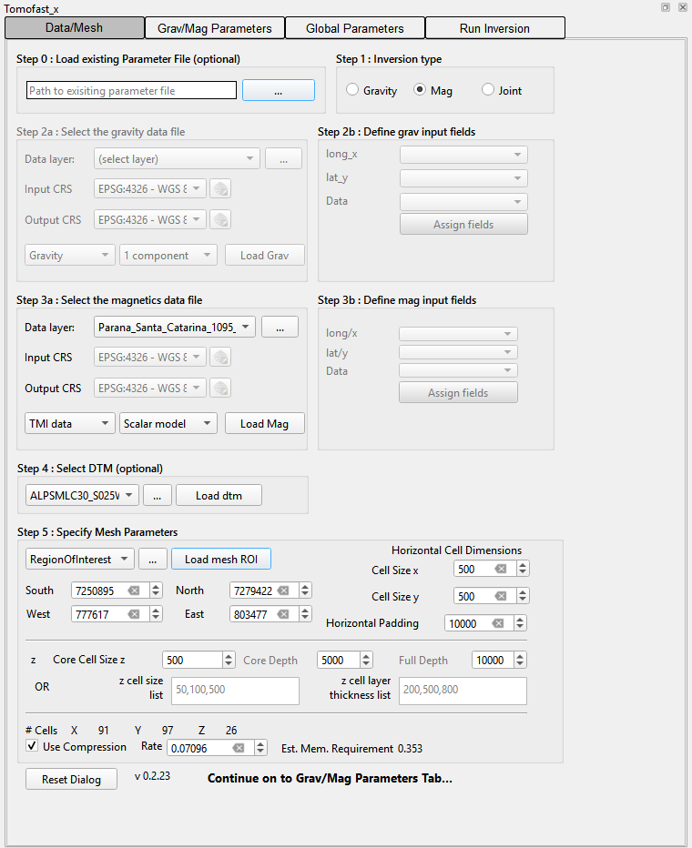
The # Cells figures are a deliberate over-estimate. The mesh that is written uses fewer, larger padding cells (71 × 77 × 16 cells for the example), so the real memory use is lower than the estimate.
4. Grav/Mag Parameters tab
- Both Sensor Height, Grav / Mag: height of the sensor above the ground in metres, assuming a draped survey. Use 0 for ground surveys. The example uses 100 m for an airborne magnetic survey.
- Mag Mag Survey Day/Month/Year then Calculate from Survey Parameters: computes the Earth's field (declination, inclination and intensity) from the IGRF model at the centre of the mesh, on the survey date and at the sensor height. For a Noddy GeoTIFF the values stored in the file are used instead. You can also type the three values directly.
Magnetic inversions need this step. If the field is left at the defaults (declination 0, inclination −45, intensity 65,000), Save Files stops with the message Please define Magnetic Field Parameters.
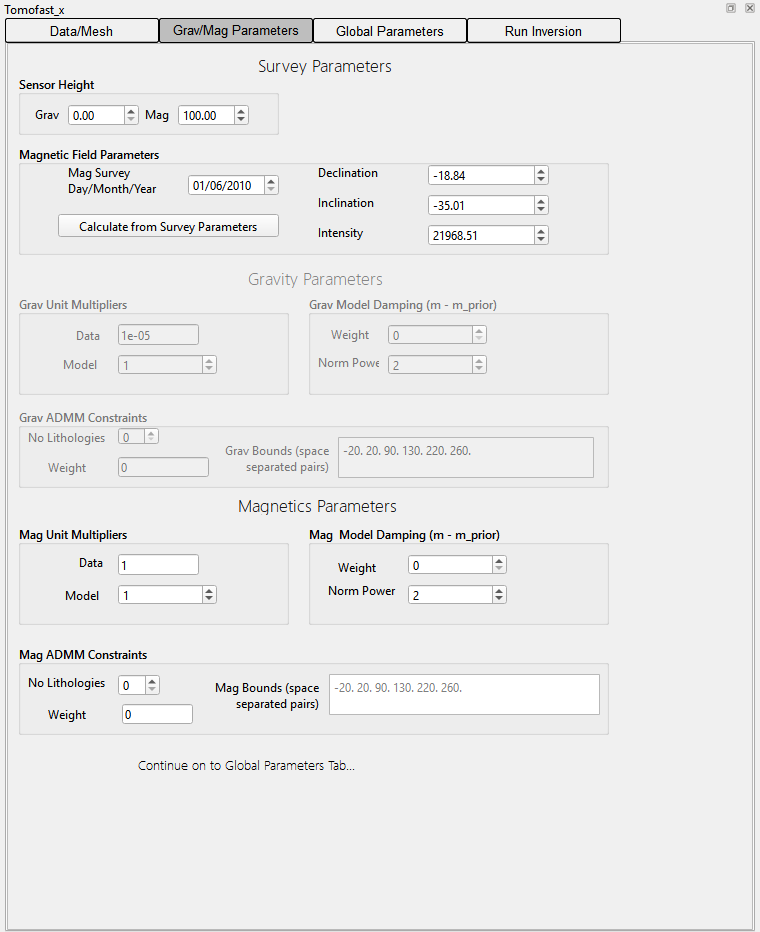
Everything else on this tab (unit multipliers, model damping, ADMM constraints) is optional. See the reference manual.
5. Global Parameters tab: save the input files
- Mag Target Misfit: check that it is 5 for a magnetic inversion. In version 0.2.23 it can stay at the gravity value (
1e-07) after you switch to Mag, so type 5 if needed. For gravity leave it at1e-07. - Both Save Files: choose (or create) an empty output folder. The plugin then writes the files Tomofast-x needs and loads the data points and mesh into QGIS.
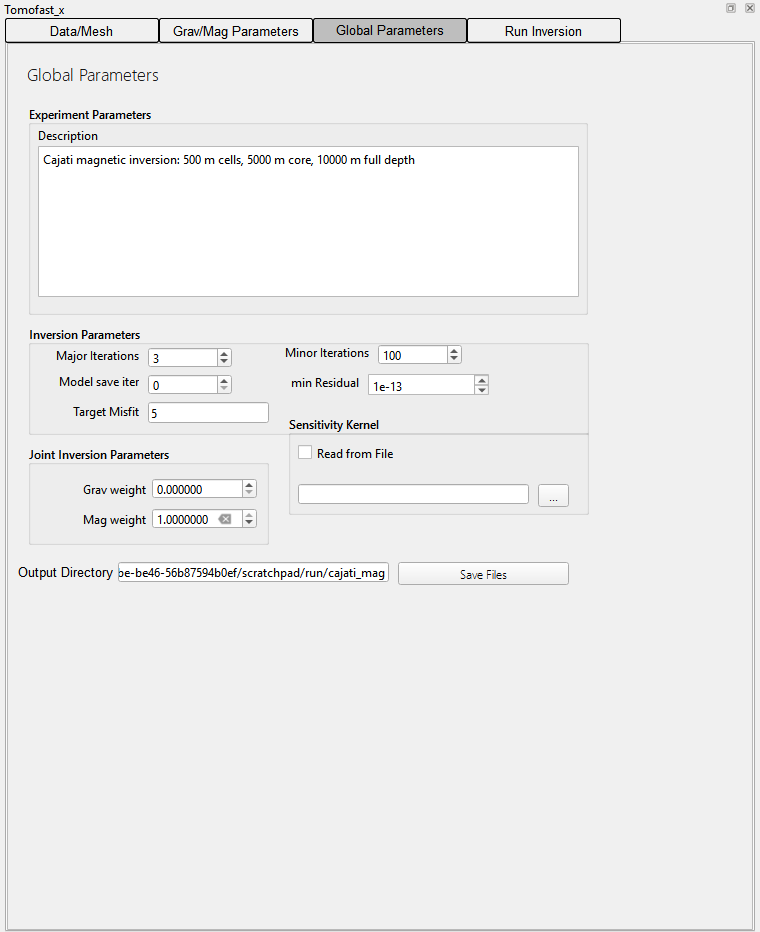
The output folder now holds:
| File | Contents |
|---|---|
paramfile.txt | The Tomofast-x parameter file. All paths in it are relative to this folder. |
data_magn.csv / data_grav.csv | The data as x, y, z, value. Grids are sampled at the centre of each core cell. |
model_grid.txt | The model mesh, including the padding cells. |
elevation_grid.csv | Ground elevation for each mesh column (only when a DTM is used). |
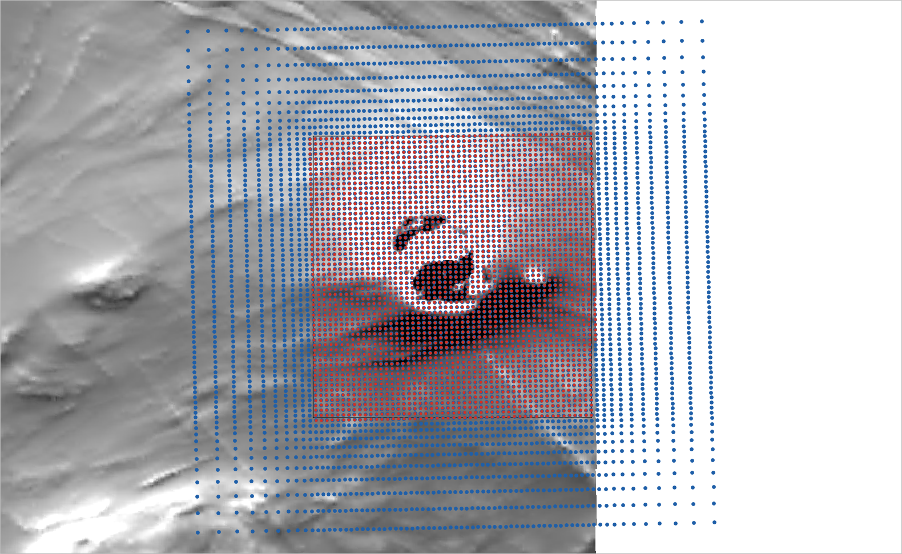
6. Run Inversion tab: run, view and export
- Both Path to tomofast: press ... and choose the Tomofast-x program (
tomofastx.exeon Windows). It is remembered for next time. - Both Path to parfile: filled in automatically with the
paramfile.txtjust saved. - Both Windows Native or Windows WSL (Windows only): choose Windows Native for
tomofastx.exe. With WSL, also type the name of your Linux distribution in WSL Distro. On macOS and Linux, give the path to mpirun if it is not on the PATH. - Both Number of processors: use one fewer than the number of cores in your computer.
- Run Inversion: starts Tomofast-x in the background. Its output appears in the Inversion Log. Cancel Inversion stops it.
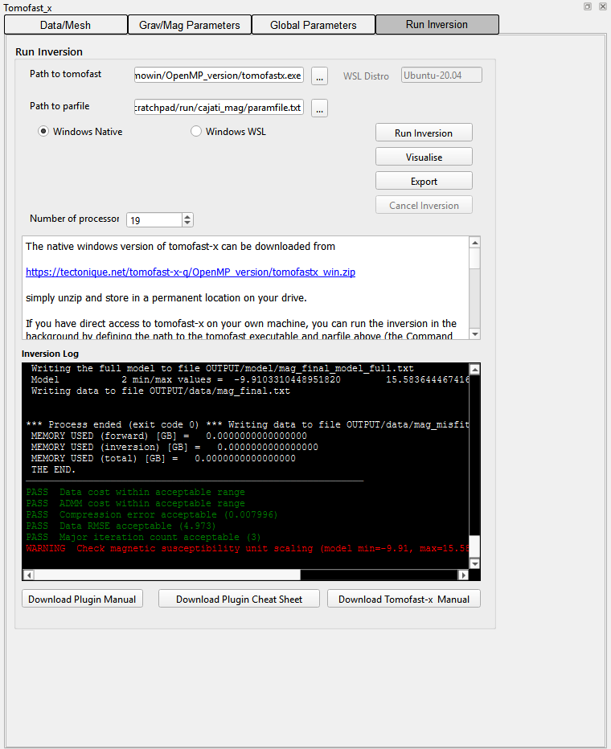
THE END, followed by the plugin's automatic checks.Check the result
When the run ends, the plugin checks the result and adds green PASS or red WARNING lines to the log. They cover the data fit, the compression error, possible over-fitting, the number of iterations and whether the model values are in a sensible range. Each warning suggests what to change. The reference manual lists all the checks.
The example run gives WARNING Check magnetic susceptibility unit scaling (min −9.9, max 15.6). This is because the example grid contains total-field values (about 22,850 nT on average) rather than an anomaly. Tomofast-x then needs unrealistic susceptibilities to fit them. Remove the main field (IGRF) or a regional trend from your grid before the inversion, as described in Before you start.
View and export
- Visualise: opens a 3D view of the final model as x, y and z slices through the core of the mesh. The colours are clipped at the 95th percentile. Needs
pyvista. - Export: writes the final model as
mag_final_model3D_full.csv(orgrav_…) in theOUTPUTfolder, with x, y, z and value columns. You can load it into QGIS or other software.
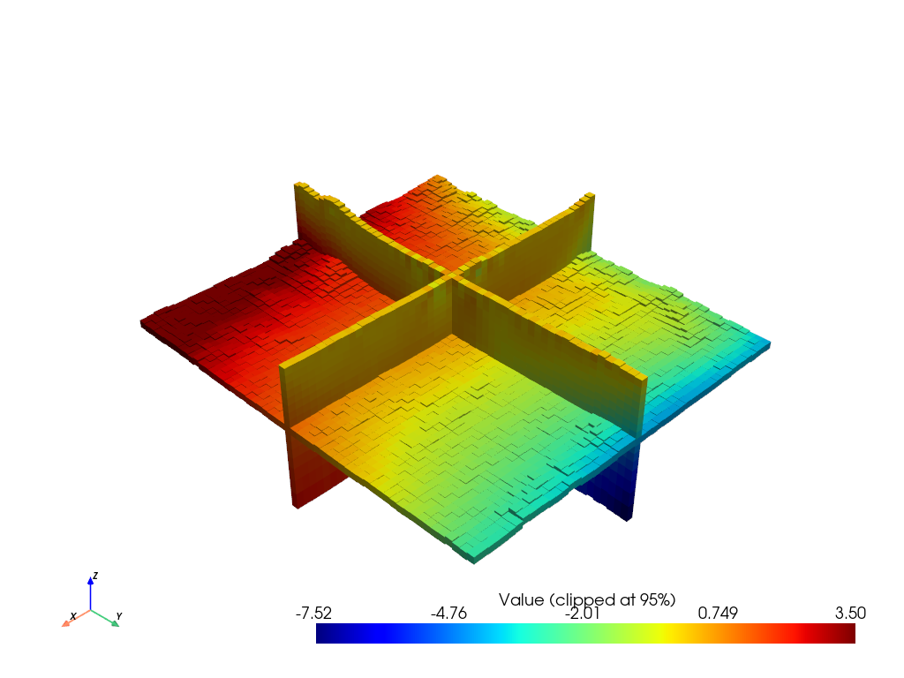
The full results are in the OUTPUT folder: Paraview/ holds VTK files you can open in ParaView, and model/ and data/ hold the final model and the observed, predicted and misfit data.
7. Differences for gravity and joint inversions
| Gravity | Magnetic | Joint | |
|---|---|---|---|
| Step 1 | Gravity | Mag | Joint |
| Data | Step 2a (and 2b for CSV), Load Grav | Step 3a (and 3b for CSV), Load Mag | Both, each with its own Load button |
| Grav/Mag Parameters | Grav sensor height | Mag sensor height, survey date, Calculate from Survey Parameters | Both sensor heights, plus the magnetic field |
| Target Misfit | 1e-07 | 5 | Leave as set |
Gravity data are expected in mGal: the default Data unit multiplier of 1e-05 converts them to SI units. Change it on the Grav/Mag Parameters tab if your data use other units.
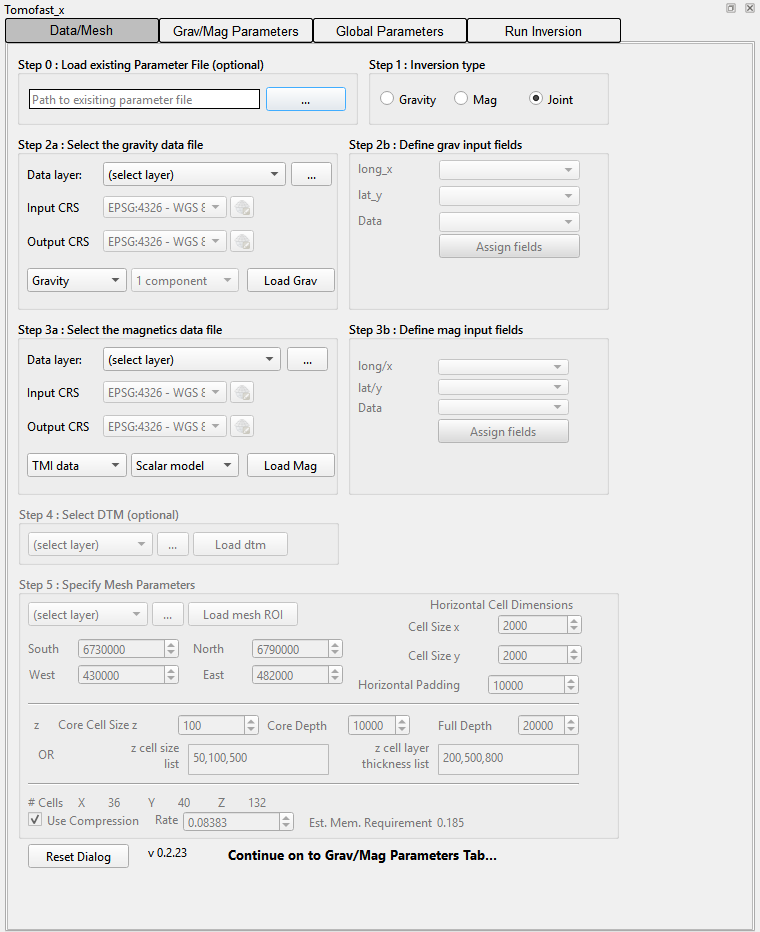
8. Where next
- The reference manual describes every field, including the optional ones skipped here: loading an existing parameter file, unit multipliers, model damping, ADMM bound constraints, joint weights, magnetisation vector inversion (MVI), gravity gradiometry, 2D profile inversion and re-using a sensitivity kernel.
- The changelog lists what changed in each version.
- Report problems on the issue tracker.